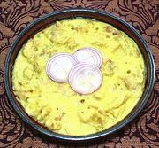

|
Chicken Curry, SumatraIndonesia - Sumatra - Gulai Ayam | ||||
| Serves: Effort: Sched: DoAhead: |
4 w/rice *** 1-1/4 hrs Yes |
This outstandingly delicious curry is simple and easy to make. It reheats well so can be made ahead. This recipe could be extended by adding some pre-cooked potatoes. | |||
|
1-2/3 ------ 4 4 3 3 3 ------ 2 ------ 1/4 10 2 1/4 2-1/2 1/2 2 ------ |
# --- oz cl oz --- T --- in oz t t t t --- |
Chicken Meat (1) -- Paste Coconut Cream (2) Chilis dry (3) Garlic Onion Candlenuts (4) ---------- Oil -- Finish items Galangal Coconut Milk Coriander Seed Turmeric Salt Palm Sugar (5) Salam Leaf (6) --------------- |
Preparing to serve dinner to a mixed couple (carni & veg), I created also a vegetarian version, Potato Curry, Sumatra which also turned out very well. Prep - (35 min)
|